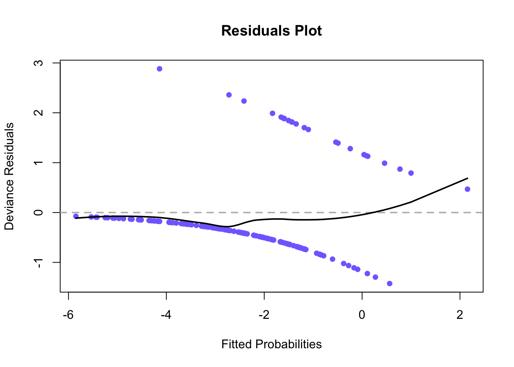

Model a binary outcome from several predictors; test with Wald and likelihood-ratio tests.
NoteIntroduction
Use multiple logistic regression to model a binary outcome from several predictors, interpreting coefficients as odds ratios.
A local health clinic sent fliers to its clients to encourage everyone, but especially older persons at high risk of complications, to get a flu shot in time for protection against an expected flu epidemic. In a pilot follow-up study, 159 clients were randomly selected and asked whether they actually received a flu shot. A client who received a flu shot was coded \(Y=1\), and a client who did not receive a flu shot was coded \(Y=0\). In addition, data were collected on their age (\(X_1\)), and their health awareness. The latter data were combined into a health awareness index (\(X_2\)), for which higher values indicate greater awareness. Also included in the dta was client gender, where males were coded \(X_3=1\) and females were coded \(X_3=0\).
Multiple logistic regression model with three predictor variables in first- order terms is assumed to be appropriate.
# read datavaxx <-read.table("../../data/CH14PR14.txt", header=TRUE)# fit logistic modelgfit3 <-glm(Y ~ X1 + X2 + X3, data=vaxx, family =binomial(link ="logit"))summary(gfit3)
Call:
glm(formula = Y ~ X1 + X2 + X3, family = binomial(link = "logit"),
data = vaxx)
Deviance Residuals:
Min 1Q Median 3Q Max
-1.4037 -0.5637 -0.3352 -0.1542 2.9394
Coefficients:
Estimate Std. Error z value Pr(>|z|)
(Intercept) -1.17716 2.98242 -0.395 0.69307
X1 0.07279 0.03038 2.396 0.01658 *
X2 -0.09899 0.03348 -2.957 0.00311 **
X3 0.43397 0.52179 0.832 0.40558
---
Signif. codes: 0 '***' 0.001 '**' 0.01 '*' 0.05 '.' 0.1 ' ' 1
(Dispersion parameter for binomial family taken to be 1)
Null deviance: 134.94 on 158 degrees of freedom
Residual deviance: 105.09 on 155 degrees of freedom
AIC: 113.09
Number of Fisher Scoring iterations: 6
The fitted response function is \[\hat{\pi} = \frac{\exp(-1.17716 + 0.07279X_1 - 0.09899X_2 + 0.43397X_3)}{1+\exp(-1.17716 + 0.07279X_1 - 0.09899X_2 + 0.43397X_3)}\]
# find the odds ratio for each of the variables and interpretexp(gfit3$coefficients[2])
X1
1.075503
exp(gfit3$coefficients[3])
X2
0.9057549
exp(gfit3$coefficients[4])
X3
1.54338
It is expected that when all other variables are held constant, one unit increase in age increases the probability of having gotten a flu shot by 7.55%.
It is expected that when all other variables are held constant, one unit increase in a person’s health awareness score decreased the probability of them having gotten a flu shot by nearly 10%.
It is expected that when all other variables are held constant, a man is 54% more likely to have gotten a flu shot than a woman with the same age and health awareness.
# find probability a 55 year old male with a health index of 60 receives vaccinepi = (exp(-1.17716+0.07279*55-0.09899*60+0.43397*1))/(1+exp(-1.17716+0.07279*55-0.09899*60+0.43397*1))# confidence interval: males with ages differing 30 and index differing 25exp(30*gfit3$coefficients[2])
The 90% joint confidence intervals for the odds ratios are (1.4877695, 52.9846933) for male clients whose ages differ by 30 years and (0.0163246, 0.434203) for male clients whose health awareness index differs by 25.
Reviewing these intervals, I am 90% confident that the probability of receiving a flu shot increases if a subject is 30 years older and decreases if a subject has a health awareness index 25 points higher.
# wald test for inclusion of x3: alpha = 0.05norm <-qnorm(.975) # cutoff for decisionsummary(gfit3) # p-value
Call:
glm(formula = Y ~ X1 + X2 + X3, family = binomial(link = "logit"),
data = vaxx)
Deviance Residuals:
Min 1Q Median 3Q Max
-1.4037 -0.5637 -0.3352 -0.1542 2.9394
Coefficients:
Estimate Std. Error z value Pr(>|z|)
(Intercept) -1.17716 2.98242 -0.395 0.69307
X1 0.07279 0.03038 2.396 0.01658 *
X2 -0.09899 0.03348 -2.957 0.00311 **
X3 0.43397 0.52179 0.832 0.40558
---
Signif. codes: 0 '***' 0.001 '**' 0.01 '*' 0.05 '.' 0.1 ' ' 1
(Dispersion parameter for binomial family taken to be 1)
Null deviance: 134.94 on 158 degrees of freedom
Residual deviance: 105.09 on 155 degrees of freedom
AIC: 113.09
Number of Fisher Scoring iterations: 6
z_star <- .43397/.52179# z* statistic
\(H_0: \beta_3 = 0\)
\(H_a: \beta_3 \neq 0\)
Decision Rule: If the test statistic is greater than 1.959964, then I will reject the null hypothesis and conclude that \(X_3\) should be included in the regression model.
Conclusion: The z* statistic is 0.8316947, which is less than 1.959964; therefore, I fail to reject the null hypothesis and do not have evidence to support including \(X_3\) in the model.
P-value: The p-value is 0.40558, which is greater than \(\alpha\). This supports my conclusion.
# likelihood ratio test for inclusion of x3: alpha = 0.05chi4c <-qchisq(.95, df=1) # chi squared cutofflibrary(lmtest) # required packagenested <-glm(Y ~ X1 + X2, # model without x3data=vaxx,family =binomial(link ="logit"))summary(nested)
Call:
glm(formula = Y ~ X1 + X2, family = binomial(link = "logit"),
data = vaxx)
Deviance Residuals:
Min 1Q Median 3Q Max
-1.4479 -0.5708 -0.3390 -0.1629 2.8430
Coefficients:
Estimate Std. Error z value Pr(>|z|)
(Intercept) -1.45778 2.91534 -0.500 0.61705
X1 0.07787 0.02970 2.622 0.00873 **
X2 -0.09547 0.03241 -2.946 0.00322 **
---
Signif. codes: 0 '***' 0.001 '**' 0.01 '*' 0.05 '.' 0.1 ' ' 1
(Dispersion parameter for binomial family taken to be 1)
Null deviance: 134.94 on 158 degrees of freedom
Residual deviance: 105.80 on 156 degrees of freedom
AIC: 111.8
Number of Fisher Scoring iterations: 6
lrtest(nested, gfit3) # test
Likelihood ratio test
Model 1: Y ~ X1 + X2
Model 2: Y ~ X1 + X2 + X3
#Df LogLik Df Chisq Pr(>Chisq)
1 3 -52.898
2 4 -52.547 1 0.7022 0.402
NOTE: the Likelihood Ratio Tests are the same as Deviance Statistic-based tests
Full Model: \([1+\exp(-X'\beta_F)]^{-1}\) where \(X'\beta_F = -1.17716 + 0.07279X_1 - 0.09899X_2 + 0.43397X_3\)
Decision Rule: If the test statistic is greater than 3.8414588, then I will reject the null hypothesis and conclude that \(X_3\) should be included in the regression model.
Conclusion: The test statistic, \(G^2\), is 0.7022. Because it is less than 3.8414588, I fail to reject the null hypothesis and do not have enough evidence to include \(X_3\) in the model.
P-value: The p-value is 0.402, which supports my conclusion.
Comparison to Wald: Both tests conclude that \(X_3\) does not improve the regression model. Their p-values were very close, both supporting this conclusion.
# likelihood ratio test for inclusion of second-order terms: alpha = 0.05chi4d <-qchisq(.95, df=3) # chi squared cutoffx_1sq <- vaxx$X1^2# x1 squared termx_2sq <- vaxx$X2^2# x2 squared termx_3sq <- vaxx$X3^2# x3 squared terminteract12 <- vaxx$X1*vaxx$X2 # interaction of x1 and x2interact13 <- vaxx$X1*vaxx$X3 # interaction of x1 and x3interact23 <- vaxx$X2*vaxx$X3 # interaction of x2 and x3complex <-glm(vaxx$Y ~ vaxx$X1 + vaxx$X2 + vaxx$X3 + x_1sq + x_2sq + interact12,family =binomial(link ="logit"))summary(complex)
Call:
glm(formula = vaxx$Y ~ vaxx$X1 + vaxx$X2 + vaxx$X3 + x_1sq +
x_2sq + interact12, family = binomial(link = "logit"))
Deviance Residuals:
Min 1Q Median 3Q Max
-1.7540 -0.5678 -0.3189 -0.1609 2.6012
Coefficients:
Estimate Std. Error z value Pr(>|z|)
(Intercept) 19.6040080 24.1905242 0.810 0.418
vaxx$X1 -0.0331617 0.4878396 -0.068 0.946
vaxx$X2 -0.7529410 0.4877503 -1.544 0.123
vaxx$X3 0.6200280 0.5543139 1.119 0.263
x_1sq -0.0005456 0.0030897 -0.177 0.860
x_2sq 0.0040101 0.0028771 1.394 0.163
interact12 0.0033484 0.0037970 0.882 0.378
(Dispersion parameter for binomial family taken to be 1)
Null deviance: 134.94 on 158 degrees of freedom
Residual deviance: 102.97 on 152 degrees of freedom
AIC: 116.97
Number of Fisher Scoring iterations: 6
lrtest(gfit3, complex) # test
Likelihood ratio test
Model 1: Y ~ X1 + X2 + X3
Model 2: vaxx$Y ~ vaxx$X1 + vaxx$X2 + vaxx$X3 + x_1sq + x_2sq + interact12
#Df LogLik Df Chisq Pr(>Chisq)
1 4 -52.547
2 7 -51.483 3 2.1263 0.5466
Full Model: \([1+\exp(-X'\beta_F)]^{-1}\) where \(X'\beta_F = 19.6040080 - 0.0331617X_1 - 0.7529410X_2 + 0.6200280X_3 - 0.0005456X_1^2 + 0.0040101X_2^2 + 0.0033484X_1X_2\)
\(H_a:\) At least one of \(\beta_4, \beta_5,\) or \(\beta_6 = 0\)
Decision Rule: If the test statistic is greater than 7.8147279, then I will reject the null hypothesis and conclude that the second-order terms should be included in the regression model.
Conclusion: The test statistic, \(G^2\), is 2.1263. Because it is less than 7.8147279, I fail to reject the null hypothesis and do not have enough evidence to support adding the second-order terms.
P-value: The p-value is 0.5466, which supports my conclusion.
# model selection with forward BICfit0 <-glm(Y ~1, family=binomial(), data=vaxx) # null modelfitfull <-glm(vaxx$Y ~ vaxx$X1 + vaxx$X2 + vaxx$X3 + interact12 + interact13 + interact23,family =binomial(link ="logit")) # all first order terms and interactionsfitbic <-step(fit0,scope=list(upper=fitfull),data=vaxx,direction="forward",k=log(nrow(vaxx)))
# deviance residuals vs. estimated probabilitiesfitbic <-glm(vaxx$Y ~ vaxx$X1 + vaxx$X2 + interact12,family =binomial(link ="logit")) # model selected using forward BICr1 <-loess(residuals(fitbic) ~predict(fitbic)) # fit residuals against fitted pi'sy <-predict(r1, se=TRUE) # predict residualxvals <-predict(fitbic) # linear predictors of fitbicorderx <-order(predict(fitbic)) # order of lowest to highest xvalssummary(fitbic) # print summary
Call:
glm(formula = vaxx$Y ~ vaxx$X1 + vaxx$X2 + interact12, family = binomial(link = "logit"))
Deviance Residuals:
Min 1Q Median 3Q Max
-1.4239 -0.5872 -0.3409 -0.1469 2.8827
Coefficients:
Estimate Std. Error z value Pr(>|z|)
(Intercept) 1.2378112 13.0773400 0.095 0.925
vaxx$X1 0.0377140 0.1917167 0.197 0.844
vaxx$X2 -0.1455268 0.2397655 -0.607 0.544
interact12 0.0007486 0.0035400 0.211 0.833
(Dispersion parameter for binomial family taken to be 1)
Null deviance: 134.94 on 158 degrees of freedom
Residual deviance: 105.75 on 155 degrees of freedom
AIC: 113.75
Number of Fisher Scoring iterations: 6
plot(predict(fitbic), residuals(fitbic), # predicted pi vs. residualcol="slateblue1", pch=16,ylab="Deviance Residuals",xlab="Fitted Probabilities",main="Residuals Plot")abline(h=0, lty=2, col="grey", lwd=2) # grey line on y = 0lines(x=xvals[orderx], # linear predictors, orderedy=y$fit[orderx], # corresponding predicted residuallwd=2) # loess line

I have some concern about the adequacy of the model fit due to the departure of the loess line from an expected value of zero for fitted probabilities above zero.